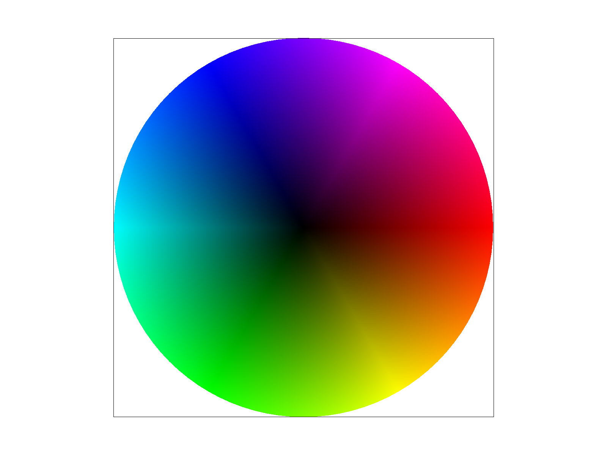

Give a high-level overview of what you implemented in this homework. Think about what you've built as a whole. Share your thoughts on what interesting things you've learned from completing the homework.
Task 1: Drawing Single-Color Triangles
I basically implemented the algorithm from lecture where I loop through all pixels in bounding box of the triangle and perform three-line test on each sample point. Only if the sample points is wthin 3 lines, its within the triangle and I just call fill_pixel() to color the pixel.
Since my implementation directly implemented the one mentioend in the question (which is sample each pixel within bounding box of the triangle), my algorithm is no worse than that.
- Below is the screenshot of the test4.svg file.
basic/test4.svg screenshot
Task 2: Antialiasing by Supersampling
Firstly, I will resize my sample_buffer based on given sample rate. I modifyed my solution from task 1 such that when rasterizing the triangle, it will split the current frame to a higher resolution frame (based on sample rate), then I will sample points in the higher resolution frame. Then in resolve_to_framebuffer function, I will avarage the color in the higher res frame and downsampling back into the original frame. Supersampling is useful since it can help reducing the aliasing effect and make the image looks smoother.
sampling rate 1
sampling rate 4
sampling rate 16
We can reserve that with higher sampling rate, the edge of the triangle looks much smoother than sampling rate=1. Also, we can visualize the difference of color in the edge, where the color is dimmer in the edge. This is because supersampling helps with antialiasing and I'm applying averaging the color.
Task 3: Transforms
The cube man is happily waving his hands and dancing!
Task 4: Barycentric coordinates
Barycentric coordinates will express every points inside the triangle as a weighted sum of the 3 vertices. So in this triangle for example, I defined 3 vertices as red, green red, and you can observe that the closer a point to the vertex, the color of the point is closer to the color of the vertex. Also, because of using barycentric coordinates, the color within the triangle is blended smoothly.
Below is the screenshot of svg/basic/test7.svg with default viewing parameters and sample rate 1.

basic/test7.svg screenshot
Task 5: "Pixel sampling" for texture mapping
Pixel sampling is the process of determining the color of a pixel in the framebuffer by sampling the texture. To perform texture mapping, I will map the sample point from framebuffer to texture space by using berycentric coordinates. If the sampling strategy is nearest: I will just sample the nearest pixel in the texture space. If the sampling strategy is bilinear: I will sample the 4 nearest pixels in the texture space and perform bilinear interpolation to get the final color by using the equation discussed in lecture.
Here's the result showing that bilinear sampling is much better at smoothing the texture than nearest sampling. And both supersampling & bilinear interpolation can help with antialiasing.
nearest sampling at 1 sample per pixel
nearest sampling at 16 samples per pixel
bilinear sampling at 1 sample per pixel
bilinear sampling at 16 samples per pixel
Task 6: "Level Sampling" with mipmaps for texture mapping
Level sampling in texture mapping determines which mipmap level should be used when fetching texture data. Since textures are often downsampled into multiple levels (mipmaps) to improve rendering efficiency and reduce aliasing, selecting the correct level is crucial.
In terms of their performance, level 0 is the fastest but it uses the full resolution so that it will use a lot of memory, and it will have aliasing problems. Nearest will improve the aliasing problem by choosing the nearest mipmap level. Finally Linear has the best performance as it will interpolate between two mipmap levels to get the final color such that it has better antialiasing effect.
texture image: my sister's cat!
L_ZERO & P_NEAREST
L_ZERO & P_LINEAR
L_NEAREST & P_NEAREST
L_NEAREST & P_LINEAR
(Optional) Task 7: Extra Credit - Draw Something Creative!